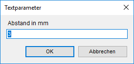

")
")
Anpassen der Textlänge über den Breitenfaktor, die Textgröße oder Referenzelemente und -abstände. Aktiv während der Abfrage [Lage].
1.Abstand wählen (optional)
Wenn die Textlänge geringer oder größer sein soll als das Referenzelement oder der -abstand, können Sie ein Differenzmaß eingeben.
Dieser Abstand wird vor und nach dem Text von der Textlänge abgezogen. Öffnet den Dialog Textparameter.
§Klicken Sie auf die Schaltfläche Abstand (z. B. ) und geben Sie im Dialog den entsprechenden Abstand ein. Bestätigen Sie mit der Eingabetaste.
 |
2.Anpassungsmodus wählen
§Klicken Sie eine der folgenden Funktionen an, um zu bestimmen, ob die Textlänge anhand eines Breitenfaktors oder einer Textgröße angepasst werden soll.
Textlänge anpassen über Ändern des Breitenfaktors Um die gewünschte Textlänge zu erhalten, wird der Text über den Breitenfaktor gestreckt oder gestaucht. Die Textgröße wird nicht verändert. |
|
Textlänge anpassen über Ändern der Textgröße Um die gewünschte Textlänge zu erhalten, wird der Text über die Textgröße vergrößert oder verkleinert. Der Breitenfaktor wird nicht verändert. |
3.Referenzart wählen
§Wählen Sie eine der folgenden Funktionen, um die Textlänge zu bestimmen.
|
Länge aus Linie: Bestimmung der Blockbreite über die Länge einer Linie. Klicken Sie eine Linie an, deren Länge Sie übernehmen möchten. [Welche Linie]. |
|
Länge aus Abstand Punkt/Linie: Definition der Blockbreite über den Abstand von einem Punkt zu einer Linie. Klicken Sie zunächst einen Punkt an [Welcher Punkt] und dann eine Linie [Welche Linie]. |
|
Länge aus Abstand Punkt/Punkt: Definition der Blockbreite über den Abstand zwischen zwei Punkten. Klicken Sie den ersten Punkt an [1. Punkt] und dann den zweiten Punkt [2. Punkt]. |
|
Länge aus Abstand Linie/Linie: Definition Blockbreite über den Abstand zwischen zwei Linien. Klicken Sie die erste Linie an [1. Linie] und dann die zweite Linie [2. Linie]. |


Sie können die Eingabe jederzeit abbrechen, indem Sie auf Abbruch klicken. Der Text wird am Cursor als Vorschau angehängt und die Zeichenmarke wird an den Punkt gesetzt, an dem der Text ausgerichtet wird. Wenn Sie Änderungen vornehmen möchten, können Sie die Schritte 1 - 3 unabhängig voneinander wiederholen, bevor Sie den Text absetzen.
§Setzen Sie den Text mit Linksklick an der Zeichenmarke ab.
Siehe auch: